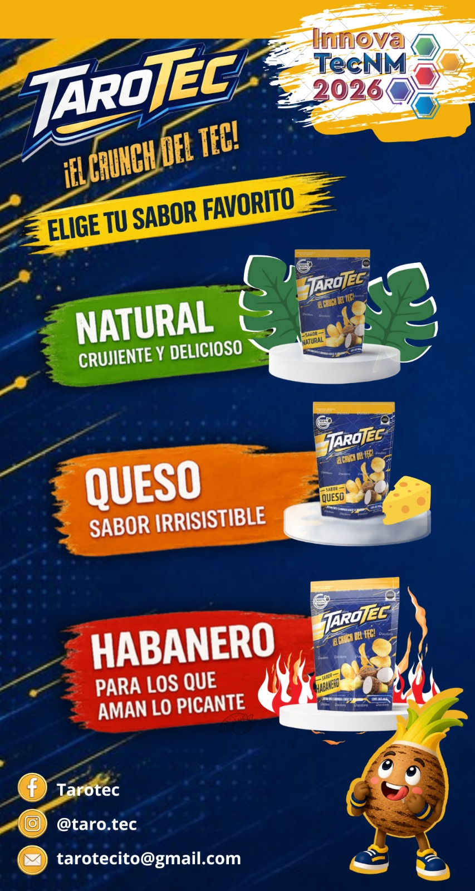
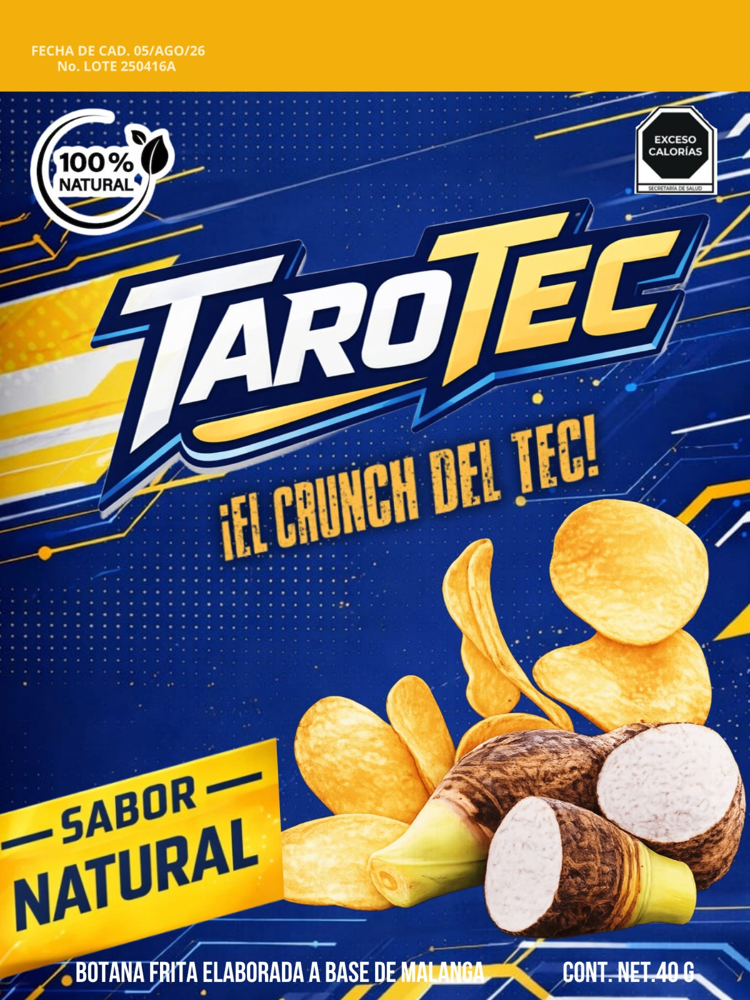
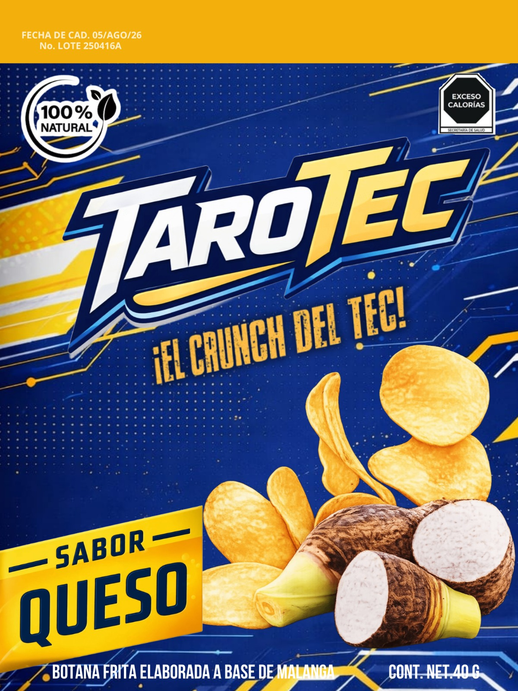
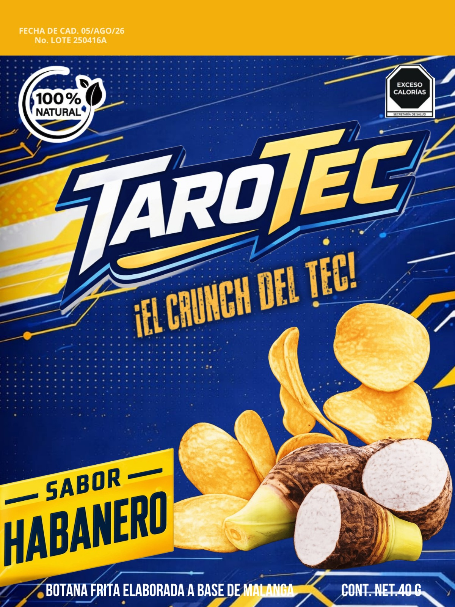
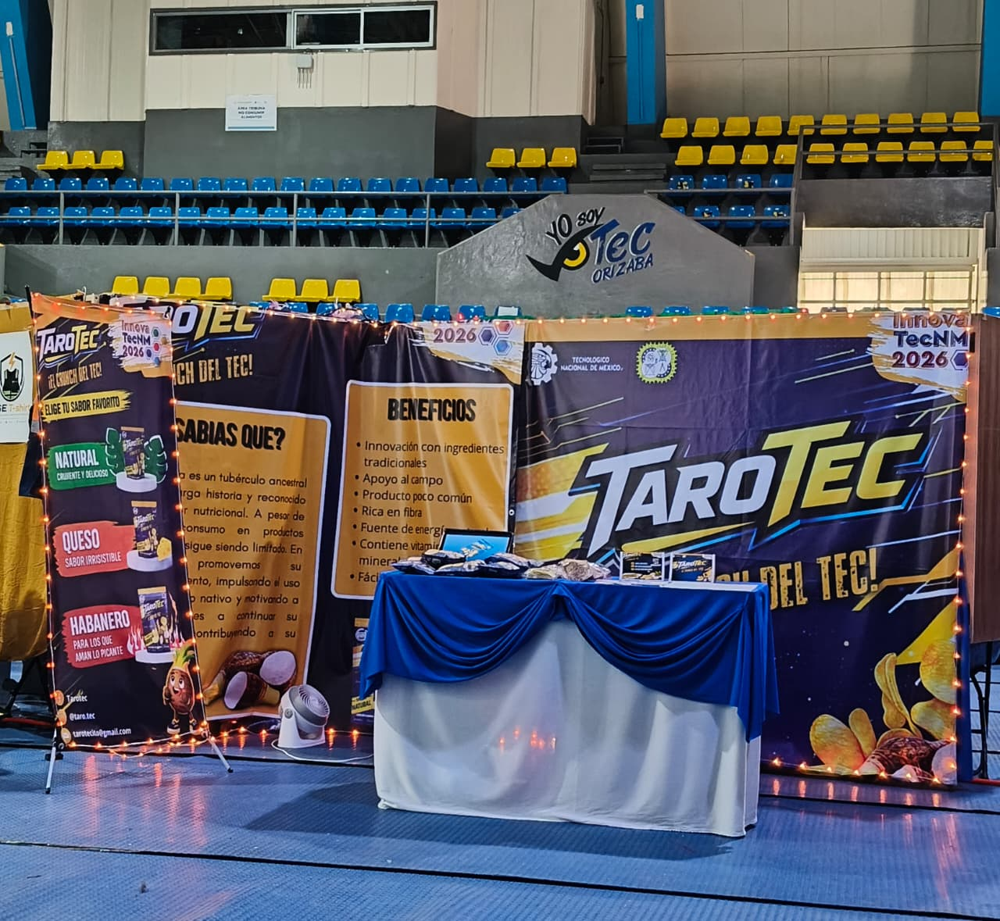

¡EL CRUNCH DEL TEC!
Botana frita elaborada a base de malanga · 100% Natural · 40 g

TaroTec es una botana innovadora elaborada a base de malanga (Colocasia esculenta), un tubérculo ancestral con gran valor nutricional. Promovemos su consumo impulsando el uso de ingredientes nativos y contribuyendo al campo mexicano.

Crujiente y delicioso
El sabor puro de la malanga. Simple, auténtico y adictivo.

Sabor irresistible
La combinación perfecta entre el crunch de la malanga y el intenso sabor a queso.

Para los que aman lo picante
Un golpe de calor habanero que te dejará pidiendo más. 🔥
La malanga es un tubérculo ancestral con larga historia y reconocido valor nutricional. A pesar de su riqueza, su consumo en productos procesados sigue siendo limitado.
En TaroTec promovemos su consumo, impulsando el uso de este ingrediente nativo y motivando a las comunidades a continuar su cultivo, contribuyendo así a su preservación.
